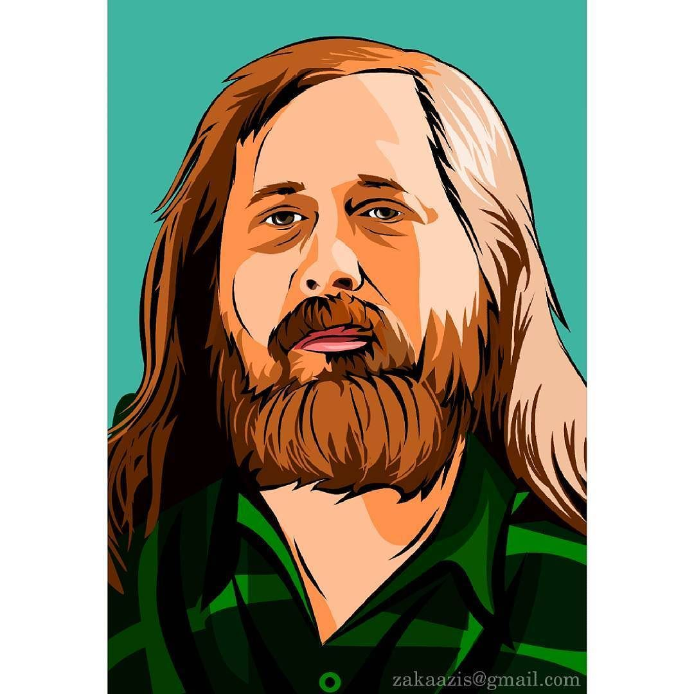

Who is RMS?
Richard Matthew Stallman leads the Free Software Movement, which shows how the usual non-free software subjects users to the unjust power of its developers, plus their spying and manipulation, and campaigns to replace it with free (freedom-respecting) software.
Interesting Facts About Richard M. Stallman
- Stallman worked at the MIT Artificial Intelligence Lab from 1971 to 1984, developing system software including the first extensible text editor Emacs (1976), plus the AI technique of dependency-directed backtracking, also nown as truth maintenance (1975).
- In 1983 Stallman launched the Free Software Movement by announcing the project to develop the GNU operating system, planned to consist entirely of free software.
- In 1999, Stallman called for development of a free on-line encyclopedia through inviting the public to contribute articles. This idea helped inspire Wikipedia.
- Nowadays, Stallman focuses on political advocacy for free software and its ethical ideas.